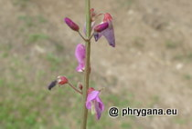

T.Anderson, 1863")
| Phrygana: la Nature en Crète principalement, mais aussi d'ailleurs ... |
|  |
|
|
| Desmodium incanum | Leucojum aestivum | Thunbergia erecta |
| Espèces: 1500--- Faune: 579 -- Flora: 893 -- Galles (Bacteria): 2 -- Champignons: 25 -- Lichens: 1 | |||||
| Nouveautés | |||||
| Fauna: | Polygonia c-album | Flora: | Kalanchoe pinnata | Fauna: | Amphimallon solstitiale |
| Fauna: | Anoplotrupes stercorosus | Flora: | Pluchea carolinensis | Fauna: | Lonchura castaneothorax |
| Fauna: | Agromyza anthracina | Flora: | Caltha palustris | Flora: | Ludwigia octovalvis |
| 08 septembre 2024 |